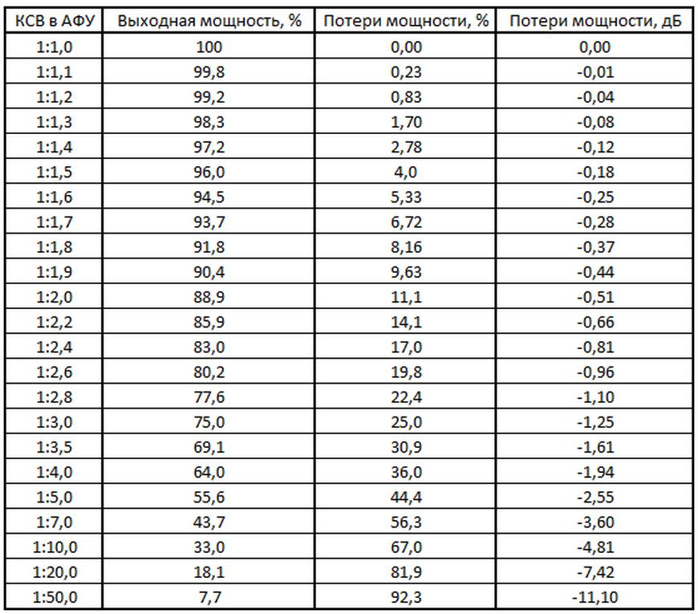

Таблица потери мощности от значения КСВ.
Данная таблица наглядно показывает, как подает мощность передатчика от увеличения значения КСВ (коэффициента стоячей волны). И что данная зависимость не линейная.
#АНТЕННЫ
#РАДИОСВЯЗЬ
#КСВ
Это вложение из поста t.me/platforma_fpv/229/1354
#АНТЕННЫ
#РАДИОСВЯЗЬ
➤ Антенны
-
LoRa - обучающее видео
Невозможно отобразить содержимое https://t.me/platforma_fpv/229/1329
Что такое LoRa, как работает, для чего нужна.
-
Невозможно отобразить содержимое https://t.me/platforma_fpv/229/1331
Принципы работы и модуляции.
-
Невозможно отобразить содержимое https://t.me/platforma_fpv/229/1331
Ключевые основные параметры модуляции.
Веб-страница создана автоматически на основе поста пользователя ПЛАТФОРМА_FPV